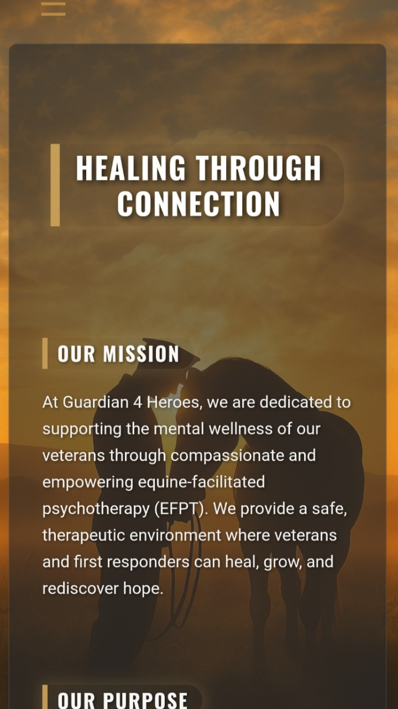
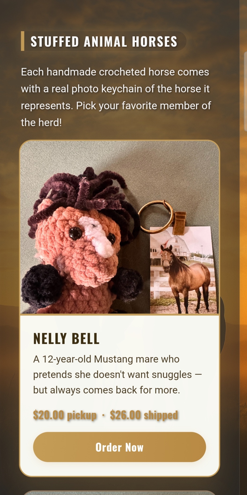
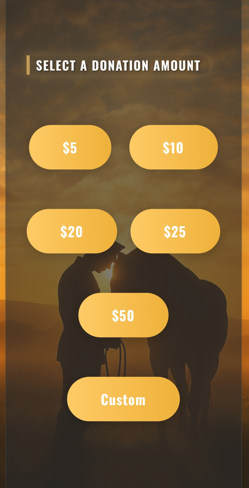
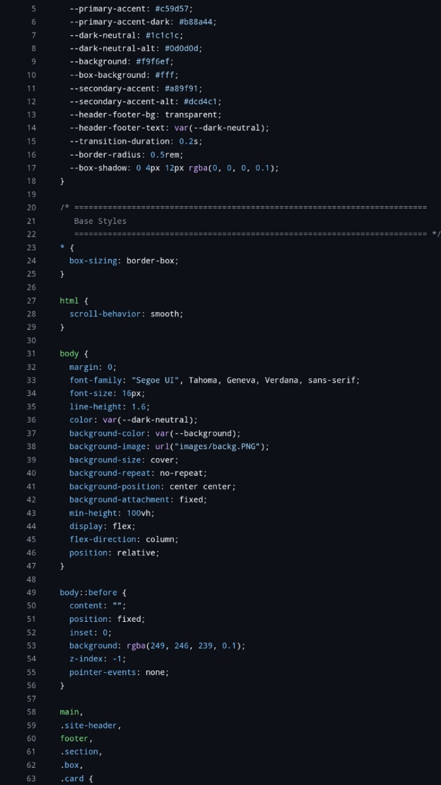
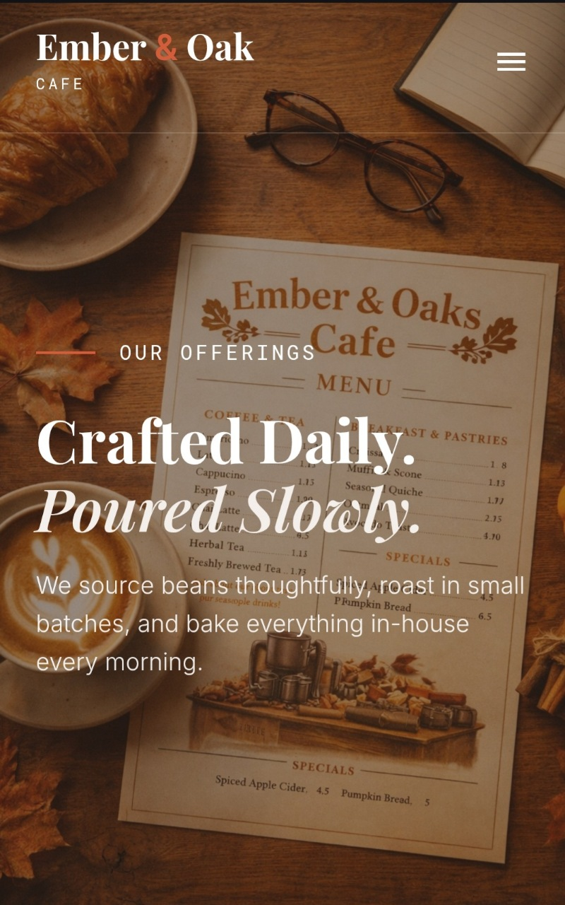
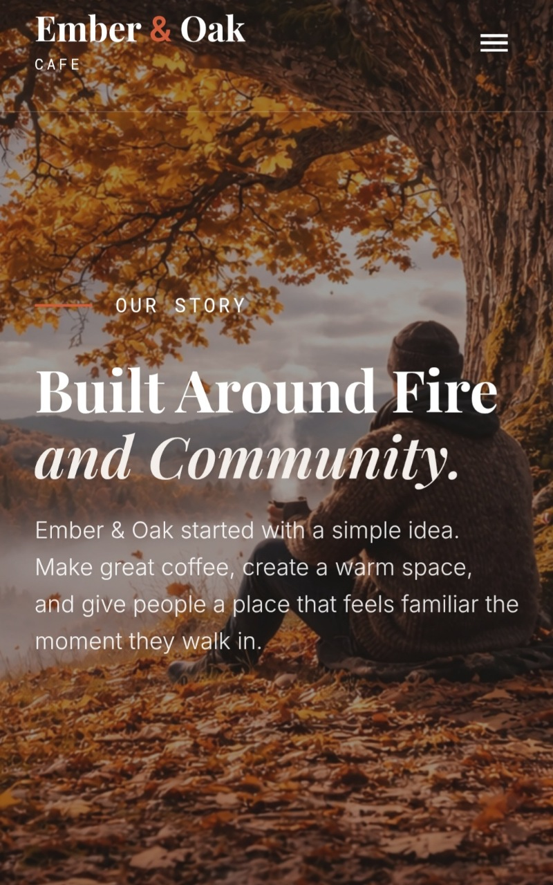
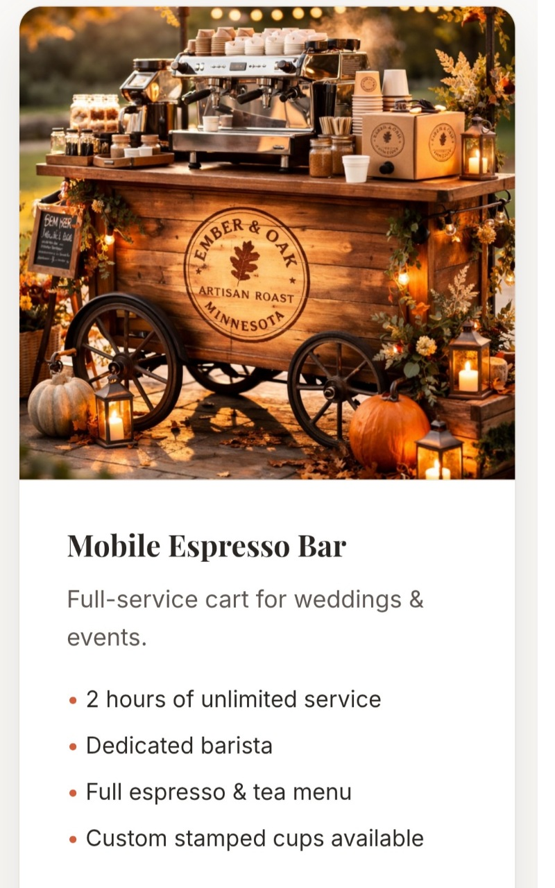
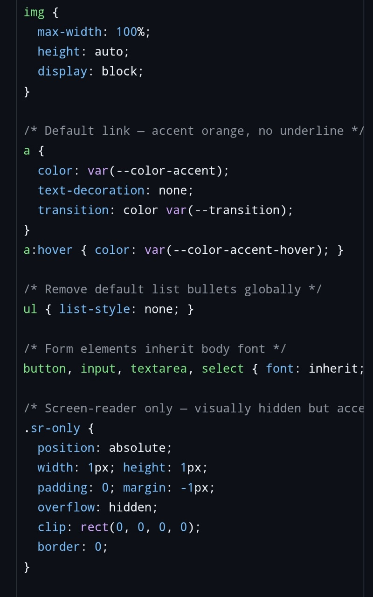

IronShield Roofing
Storm‑damage lead generation page. Trust‑first layout, call‑driven structure, and a focused quote request flow built for a local roofing contractor.
View Demo →WebOps Studio · Selected Work
No templates. No page builders. Every project is hand‑coded HTML, CSS, and JavaScript — structured for speed, clarity, and conversion.

Guardian 4 Heroes is an equine therapy nonprofit serving veterans and first responders — people I have a deep connection with as a veteran myself. They needed a site that felt emotionally grounded, mission‑driven, and easy to navigate.
I built everything from scratch in HTML, CSS, and vanilla JavaScript, keeping it lightweight, accessible, and conversion‑focused throughout. The design prioritizes clear donation pathways and trust‑building imagery without relying on heavy frameworks.
A deeper look into the mission statement pages, product card layouts for the shop, the streamlined donation flow, and the underlying CSS structure.




Craft a digital home for an equine therapy nonprofit that builds trust with veterans and first responders while clearly communicating the mission.
The client needed a site that was emotionally grounded without feeling heavy, supported multiple pathways for donation and program sign‑ups, and maintained fast load times on limited budgets.
I designed and coded a bespoke experience using semantic HTML5, modern CSS, and vanilla JavaScript. The layout guides the eye from mission story to impact statistics to the call to donate. A modular CSS architecture keeps the styles maintainable and scalable.
The nonprofit saw an increase in both donations and volunteer sign‑ups within the first month. Visitors reported that the site felt trustworthy and easy to navigate, leading to longer session durations and higher engagement.
Technologies: HTML5, CSS3, Vanilla JavaScript. Role: Lead designer & developer — responsible for strategy, design, implementation and deployment.
These concept builds exist to show range. Different industries, different tones, different layout challenges — all hand‑coded from scratch to demonstrate that the skill set goes well beyond any single niche.
A full six‑page concept site for a fictional neighbourhood cafe. Built to demonstrate multi‑page architecture, menu layout, event listings, catering page structure, and a cohesive brand system across pages.
View Live Demo ↗




Purpose‑built landing pages designed to show what a conversion‑focused build looks like across different industries. Each one is hand‑coded, deployed live, and built to demonstrate a real use case — not just a pretty layout.
Storm‑damage lead generation page. Trust‑first layout, call‑driven structure, and a focused quote request flow built for a local roofing contractor.
View Demo →Application‑style landing page for a high‑ticket coaching offer. Built to qualify leads and drive form submissions, not just traffic.
Request This Build →Clean waitlist page for a product launch. Focused layout, fast load, and a clear value stack built to convert visitors into signups.
Request This Build →Tell me what you need and I will map out the build and the best path to ship it clean.
Press ESC or tap outside to close